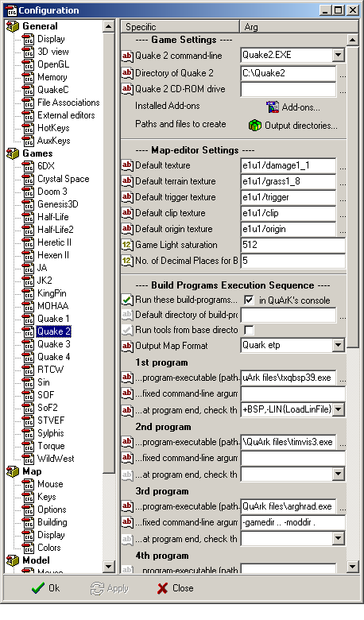

Specific games
Updated 09 Jul 2012
- QuArK Information Base
- 1. Introduction to QuArK
- 1.3. Configuration of QuArK
- 1.3.2. Games
|
|
Specific games
Updated 09 Jul 2012
|
Upper levels: - QuArK Information Base - 1. Introduction to QuArK - 1.3. Configuration of QuArK - 1.3.2. Games |
|
1.3.2.1. Specific games |
[ - - ] |
 Each kind of FPS-game has its own setup-options and build tools. In these folders, you must specify, for the FPS-games you want to develop for, where you've installed the game, how it should be started and with what command-line arguments it should run. You must also specify where QuArK can find the specific build tools, which are needed to build (compile) a map to something that the FPS-game can read and understand. On http://quark.planetquake.gamespy.com/download_tools.php3 you can find file-archives with build tools for the FPS-games that QuArK supports. A build tool set typically consists of three or four different programs;
With the release of QuArK 6.2, you now have more control of which build-tools should run, and in what order. There is place for up to nine different build-tools, per game. With the standard installation of QuArK, these build-tools are set to default values, which definitely does not conform to your own directory-paths. The first thing you need to do, is to tell QuArK where it can find the build-tools, and if you use other named build-tools than the default supplied, you need to change that too. There are lot of useful information to be found, regarding the QuArK build-tool configuration, in the fly-over hints. So keep your mouse-cursor steady on an item and read the hint. |
|
Sections |
|
Copyright (c) 2009, GNU General Public License by The QuArK (Quake Army Knife) Community - http://quark.sourceforge.net/ |
[ - Top - ] |